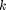

Señales y Sistemas: Práctica 5 "Series de Fourier"
Integrantes:
- Fajardo Granados Dayra Gabriela
- Ortíz Islas José Manuel
- Rodríguez Castillo Silvia
Contents
Objetivos
- Realizar gráficas de series de Fourier exponenciales y trigonométricas en tiempo continuo
- Manipulación de instrucciones en MATLAB
- Calculo númerico de los coeficientes de Fourier
Introducción.
Aproximación númerica de los coeficientes de Fourier exponencial compleja
Se pueden calcular los usando la transformada discreta de Fourier, que utiliza las muestras de una señal periódica durante un período. El intervalo de muestreo es de segundos. Por lo tanto, hay número de muestras en un período . Para encontrar la relación entre y las muestras de , se considera lo siguiente
donde es la  muestra de y
Aunque en la práctica es imposible hacer que por lo que el calculo de los se hara así:
Ejemplo 6.1
A) Para 4 armonicos
d0=0.504; w0=2*pi/(tf-t0); dn=@(n) ((exp(-pi*j*n*w0-pi/2))*(exp(pi*j*n*w0+pi/2))-1)/pi*(2*pi*n*j+1); t0=0; tf=pi; f=@(t) (u(t)-u(t-pi))*exp(-t/2); armo=4; a=-2*pi; b=2*pi; sfc(t0,tf,dn,d0,f,armo,a,b)
B)Para 15 armonicos
w0=2*pi/(tf-t0);
dn=@(n) ((exp(-pi*j*n*w0-pi/2))*(exp(pi*j*n*w0+pi/2))-1)/pi*(2*pi*n*j+1);
t0=0;
tf=pi;
f=@(t) (u(t)-u(t-pi))*exp(-t/2);
armo=15;
a=-2*pi;
b=2*pi;
sfc(t0,tf,dn,d0,f,armo,a,b)
%
Ejemplo 6.2
A) Ejericio para 4 armonicos
d0=0.504; dn=@(n) 0.504/(1+4*n*j); t0=-0.5; tf=1.5; f=@(t) 6*(1-abs(t-0.5))-3; armo=4; a=-5; b=6; sfctri(t0,tf,dn,d0,f,armo,a,b)
B)Ejercicio para 15 armonicos
d0=0.504; dn=@(n) 0.504/(1+4*n*j); t0=-0.5; tf=1.5; f=@(t) 6*(1-abs(t-0.5))-3; armo=15; a=-5; b=6; sfctri15(t0,tf,dn,d0,f,armo,a,b)
Ejemplo 6.4
A)Para 4 armonicos
d0=0.5; w0=2*pi/(tf-t0); dn=@(n) ((exp(-pi*j*n*w0/2))*(exp(pi*j*n*w0))-1)/(2*pi*n*j); t0=-pi/2; tf=pi/2; f=@(t) u(t+pi/2)-u(t-pi/2); armo=4; a=-2*pi; b=2*pi; sfc(t0,tf,dn,d0,f,armo,a,b)
B) Para 15 armonicos
d0=0.5; w0=2*pi/(tf-t0); dn=@(n) ((exp(-pi*j*n*w0/2))*(exp(pi*j*n*w0))-1)/(2*pi*n*j); t0=-pi/2; tf=pi/2; f=@(t) u(t+pi/2)-u(t-pi/2); armo=15; a=-2*pi; b=2*pi; sfc(t0,tf,dn,d0,f,armo,a,b)
Ejemplo 6.5
A)Ejercicio para 4 armonicos
d0=2; dn=@(n) (exp(2*pi*j*n)+1)/-4*pi*n*n+pi; t0=0; tf=pi; f=@(t) abs(sin(t)); armo=4; a=-8; b=9; sfcsin(t0,tf,dn,d0,f,armo,a,b)
B)Ejercicio para 15 armonicos
d0=2; dn=@(n) (exp(2*pi*j*n)+1)/-4*pi*n*n+pi; t0=0; tf=pi; f=@(t) abs(sin(t)); armo=15; a=-8; b=9; sfcsin15(t0,tf,dn,d0,f,armo,a,b)
Ejemplo 6.7
Código similar para el ejemplo 6.2
x = f=@(t) abs(sin(t)); t = -2*pi:0.001:2*pi; sumterms = zeros(16, length(t)); sumterms(1,:) = 1/2; for n = 1:size(sumterms,1)-1; sumterms(n+1,:) = (2/(pi*n)*sin(pi*n/2))*cos(n*t); end x_N = cumsum (sumterms); figure(1); clf; ind = 0; for N = [0,1:2:size(sumterms, 1)-1], ind = ind+1; subplot (3,3,ind); plot (t,x_N(N+1),:)%, 'k',t,x(t), 'k--'); axis ([-2*pi 2*pi -0.2 1.2]); xlabel ('t'); ylabel (['x_{',num2str(N),'} (t)']); end %
Algoritmo de trapecio compuesto
- Implementación
function RCTrapecio(a,b,na,f,t0,tf,d0) h=(b-a)/na; TFo=0; for j=1:na-1 x=a+j*h; TFo=TFo+f(x); end D=diff('f', 2); TC=(h/2)*(f(a)+2*TFo+f(b))-((((b-a)/2))*h*h*D) w0=2*pi/(tf-t0); sf=d0; t=a:0.0001:b; for n=1:na sf=sf+TC(-na)*exp(w0*-na*t*j)+TC(na)*exp(w0*na*t*j); end figure (1) hFig = figure(1); set(hFig, 'Position', [0 0 900 900]) subplot(3,2,1) plot(t,sf,'LineWidth',2) grid on legend('Serie de Fourier','Location','Best') xlabel('t','FontWeight','bold','FontSize',16) sf=d0; t1=t0:0.0001:tf; for n=1:na sf=sf+TC(-na)*exp(w0*-na*t1*j)+TC(n)*exp(w0*na*t1*j); end subplot(3,2,2) plot(t1,f(t1),'r','LineWidth',2) grid on hold on plot(t1,sf,'LineWidth',2) legend('Función original','Serie de Fourier ','Location','Best') xlabel('t','FontWeight','bold','FontSize',16) nn=-na:na; axis auto subplot(3,2,4) e=f(t1)-sf; plot(t1,e,'LineWidth',2) title('Error','FontWeight','bold','FontSize',16) xlabel('t','FontWeight','bold','FontSize',16) axis auto grid on subplot(3,2,6) e=f(t1)-sf; area(t1,e.^2) legend('Energia del error','Location','Best') xlabel('t','FontWeight','bold','FontSize',16) axis auto grid on absdn=zeros(1,length(nn)); cont=1; for i =-na:na if i==0 absdn(cont)=d0; end absdn(cont)=TC(i); cont=cont+1; end subplot(3,2,3) stem(w0*nn,abs(absdn),'LineWidth',2) title('Espectro de magnitud D_n ','FontWeight','bold','FontSize',16) xlabel('\omega','FontWeight','bold','FontSize',16) grid on subplot(3,2,5) stem(w0*nn,angle(absdn),'LineWidth',2) title('Espectro de fase, \angle de D_n ','FontWeight','bold','FontSize',16) % % xlabel('\omega','FontWeight','bold','FontSize',16) grid on
end
Prueba
d0=0.504; t0=0; tf=pi; f=@(t) exp(-t/2); na=15; a=-7; b=7; RCTrapecio(a,b,na,f,t0,tf,d0) % % * *Computer Example C6.4* T_0 = pi; N_0 = 256; T = T_0/N_0; t = (0:T:T*(N_0-1))'; M = 15; x = exp(-t/2); x(1) = (exp(-pi/2) + 1)/2; D_n = fft (x)/N_0; n = [-N_0/2:N_0/2-1]'; clf; subplot (2, 2, 1); stem(n, abs(fftshift (D_n)),'k'); axis ([-M M -.1 .6]); xlabel('n'); ylabel('|D_n|'); subplot (2, 2, 2); stem(n, angle(fftshift(D_n)),'k'); axis([-M M -pi pi]); xlabel ('n'); ylabel('\angle D n [rad]'); n = [0:M]; C_n(1) = abs(D_n(1)); C_n(2:M+1) = 2*abs (D_n(2:M+1)); theta_n(1) = angle(D_n(1)); theta_n(2:M+1) = angle(D_n(2:M+1)); subplot (2, 2, 3); stem(n,C_n,'k'); xlabel ('n'); ylabel('C_n'); subplot (2, 2, 4); stem(n,theta_n,'k'); xlabel ('n'); ylabel('\theta n [rad]'); %
Referencias
- Lathi, B. P., & Green, R. A. (2005). Linear systems and signals (Vol. 2). New York: Oxford University Press.